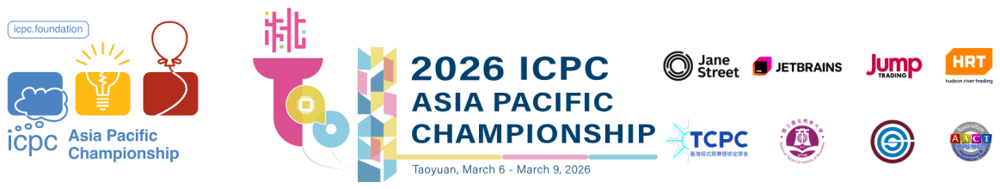

Problem Analysis
The 2026 ICPC Asia Pacific Championship
This is an analysis of some possible ways to solve the problems of The 2026 ICPC Asia Pacific Championship. Since the purpose of this analysis is mainly to give the general idea to solve each problem, we left several (implementation) details in the discussion for reader’s exercise. If some of the terminology or algorithms mentioned below are not familiar to you, your favorite search engine should be able to help. If you find an error, please send an e-mail to icpc-apac-2026-judges@googlegroups.com about it.
| Problem Title | Problem Author | Analysis Author | |
|---|---|---|---|
| A | Compare Suffixes | Mitsuru Kusumoto | Mitsuru Kusumoto |
| B | Subtree Removal Game | Mitsuru Kusumoto | Shogo Murai |
| C | Upside Down Dijkstra | Pikatan Arya Bramajati | Pikatan Arya Bramajati |
| D | Christmas Tree Un-decoration | Albert Yulius Ramahalim | Albert Yulius Ramahalim |
| E | Parallel Sums | Pikatan Arya Bramajati | Pikatan Arya Bramajati |
| F | Minesweeper String | Brian Tsai | Brian Tsai |
| G | Extra Transition | Rama Aryasuta Pangestu | Shogo Murai |
| H | Reflect Sort | Pikatan Arya Bramajati | Pikatan Arya Bramajati |
| I | Growth Factor | Pikatan Arya Bramajati | Gyojun Youn |
| J | Worldwide Playlist | Albert Yulius Ramahalim | Albert Yulius Ramahalim |
| K | Time Display Stickers | Ashar Fuadi | Jonathan Irvin Gunawan |
| L | Onion | Mitsuru Kusumoto | Ke-Wei Huang |
| M | Deformed Balance | Mitsuru Kusumoto | Mitsuru Kusumoto |
The contest judges would also like to thank the following for their valuable feedback to the tasks: Masaki Nishimoto, Ping-Hsuan Lin, Poyu Chou, Sian-Yang Tseng, Riku Kawasaki, and Yui Hosaka.